The project started from one question: how does a person who cannot move tell a robot what they want? A patient lying in bed should be able to ask for medicine, water or a phone, quickly and privately, just by looking at it. We called it telepathy with AI.
"Device allows you to choose whatever you want, fast, without using your hands."
Jan 2026
Building the demo
My final-year project reads intent from P300 brainwaves, the EEG headset however could not come to the booth, hence the pupil stood in for the brain. A webcam tracks the pupil while each object flashes in turn, and the object that makes the pupil react the most is the one the user wants.
A second camera looks down at the table. Qwen3-VL-8B, served in FP8 behind an API, scans the scene first and names up to four objects by colour and type.
28 Jan 2026
Demo day at The Everly Putrajaya
I presented the project at MaiStorage's demonstration booth during their event, Enabling Education and Industry AI through Trusted Intelligence, together with their aiDAPTIV+ platform.
Sep 2026
Fine-tuning on aiDAPTIV+
After the event the work moved to MaiStorage's AITPC workstation. I built a dataset of 1,000 images across 20 classes, ten medical devices and ten everyday Malaysian items, and fully fine-tuned Llama 3.2 11B Vision on a single GPU, with aiDAPTIV+ swapping the training state to an NVMe drive. The 700 iterations took about nine hours.
02.
How the demo works
01Scan the table with the top camera
02Qwen3-VL names up to four objects
03Calibrate the pupil camera
04Flash five times to learn the pupil baseline
05Flash each object in turn
06Pick the object with the strongest pupil reaction
vlm_prompt = (
f"Look at the image closely. List ONLY the '{self.target_category}' items that are visibly present.\n"f"Strict Rules:\n"f"1. Format: 'Color Object' (e.g., 'Red Apple', 'Black Pen').\n"f"2. Do NOT guess. If you don't see it, do not list it.\n"f"4. Return a simple comma-separated list.\n"f"5. If no '{self.target_category}' is found, reply: NONE.\n"
)
payload = {
"model": self.model_name, # Qwen3-VL-8B-Instruct-FP8"messages": [{"role": "user", "content": [
{"type": "image_url", "image_url": {"url": f"data:image/png;base64,{image_base64}"}},
{"type": "text", "text": vlm_prompt}]}],
"max_tokens": 300, "temperature": 0.0,
}
response = requests.post(self.model_url + "/v1/chat/completions", json=payload, timeout=60)
IrisV2.py · measuring the pupilPython
gray = cv2.cvtColor(eye_img, cv2.COLOR_BGR2GRAY)
blur = cv2.GaussianBlur(gray, (5, 5), 0)
_, threshold = cv2.threshold(blur, self.best_threshold, 255, cv2.THRESH_BINARY_INV)
pupil_area = cv2.countNonZero(threshold)
# Normalize area by eye width to handle Z-distance movement
norm_val = (pupil_area / (eye_width_px ** 2)) * 10000.0
self.history.append(norm_val)
if len(self.history) > 5: self.history.pop(0)
smoothed = sum(self.history) / len(self.history)
run_settings:
task_type: "image-text-to-text"task_mode: "train"per_device_train_batch_size: 1per_update_total_batch_size: 4num_train_epochs: 1max_seq_len: 2048lr_scheduler:
learning_rate: 0.000007lora:
enable_lora: false # full fine-tune, no LoRA
path_settings:
model_name_or_path: "Llama-3.2-11B-Vision-Instruct"nvme_path: "/mnt/nvme0" # aiDAPTIV+ swaps training state to this SSD
05.
The dataset
700train100validation200test
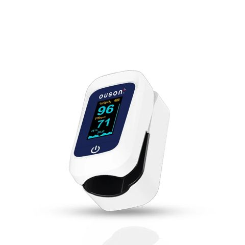
Fingertip pulse oximeter
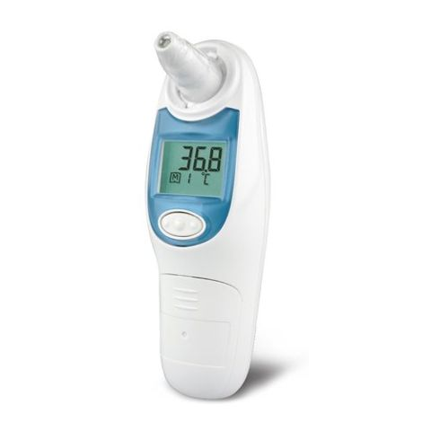
Digital thermometer
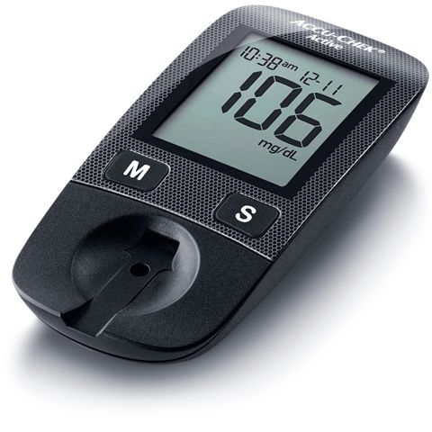
Blood glucose meter
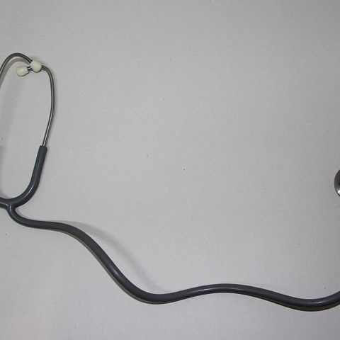
Stethoscope
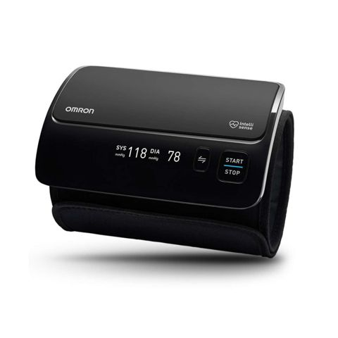
Digital blood pressure monitor
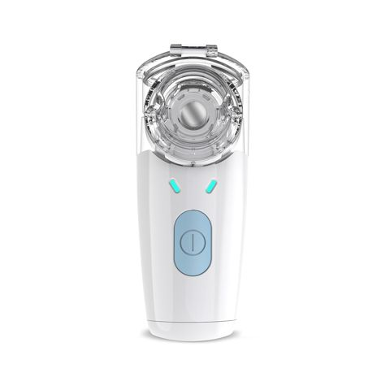
Portable nebulizer
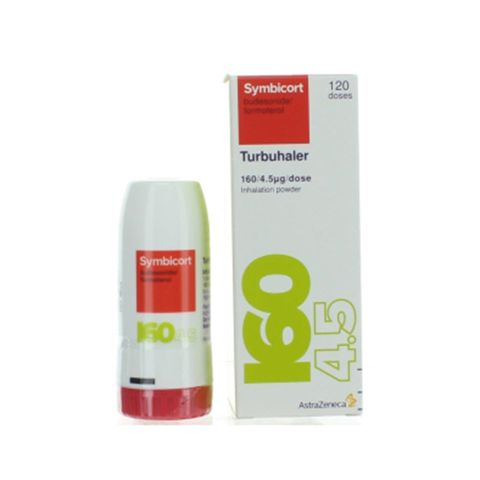
Inhaler
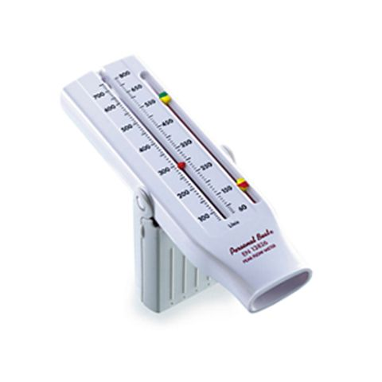
Peak flow meter
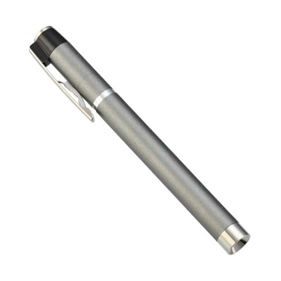
Medical penlight
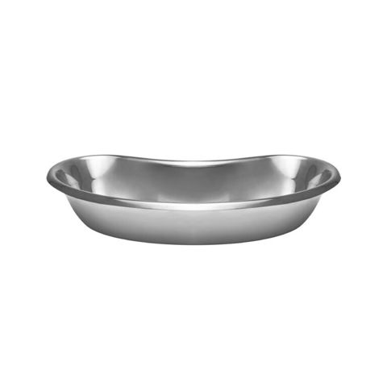
Kidney dish
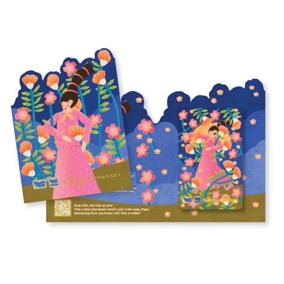
Touch 'n Go card
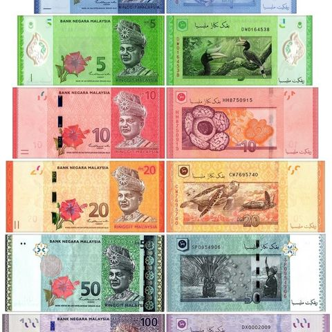
Malaysian ringgit banknote
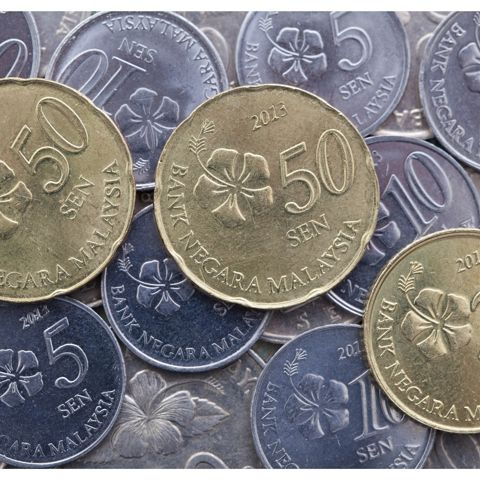
Malaysian ringgit coin
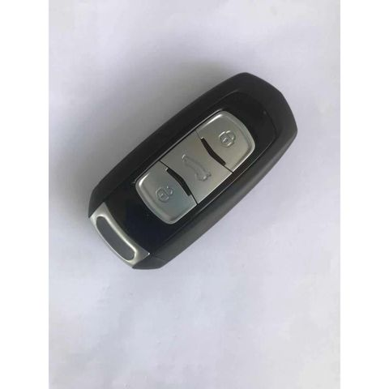
Proton car key
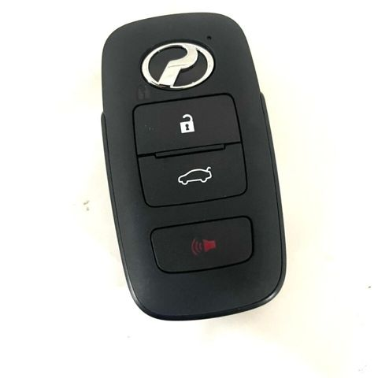
Perodua car key
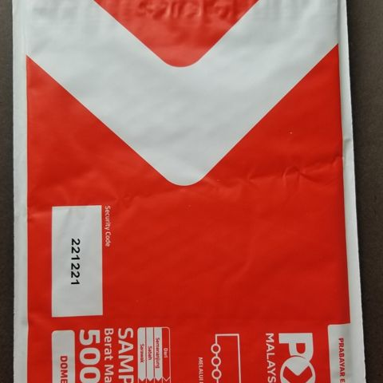
Pos Malaysia envelope
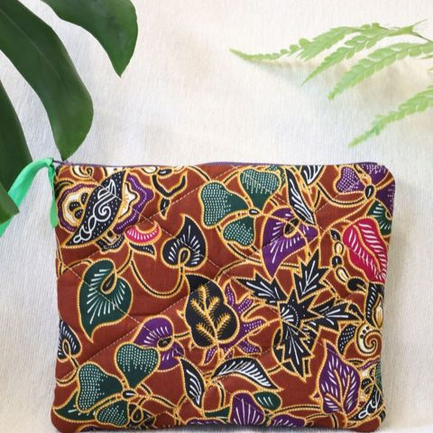
Malaysian batik pouch
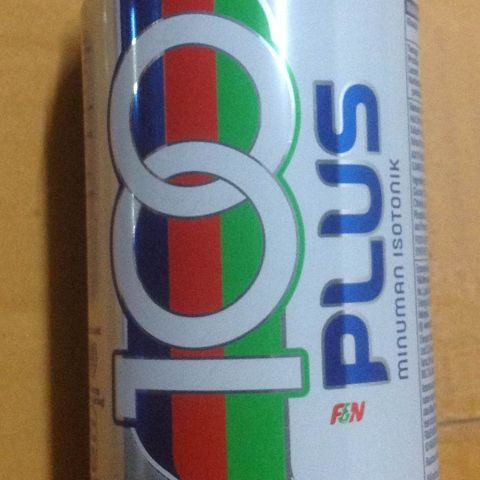
100PLUS isotonic drink
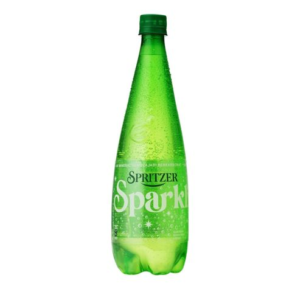
Spritzer mineral water bottle
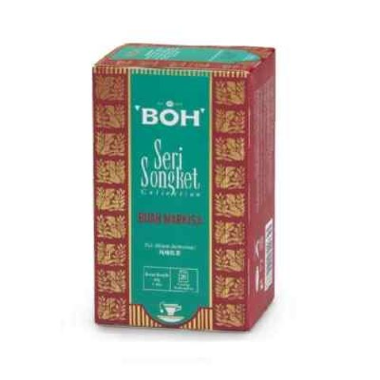
BOH tea
06.
Results
Llama 3.2 11B Vision on the 200 test images, before and after fine-tuning on aiDAPTIV+.
86.00%accuracy before fine-tuning
94.50%accuracy after fine-tuning
28 → 11wrong answers, 60.7% fewer
0.944macro F1 after, from 0.879
The change is significant, McNemar exact p = 0.000015, with 17 answers fixed and none broken. For comparison, Qwen2.5-VL-7B already scored 95.00% before any training.
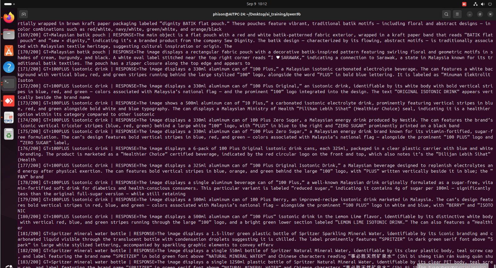
Evaluation on the AITPC workstation, 9 September 2026. Each line compares the label with the model's answer.